Le but de cette mission est de changer l’apparence de ton personnage. Ton personnage ont ce qu’on appelle un ou plusieurs costumes.
Premierement clique sur l’onglet costume et tu obtiens ceci[a]:
Pour le moment tu n’as pas de costume spécial. [b]Pour en choisir un va dans le menu avec le petit papier , clique costume. La tu as tout une liste de costume. 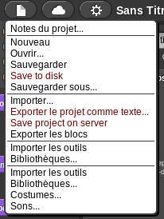 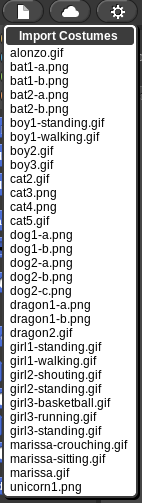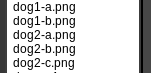
Tu peux par exemple choisir le chien [b]pour habiller ton personnage selectionne dog2-a.png :

Maintenant que tu as vu comment ajouter des costumes, tu peux en ajouter deux autres : dog2-b.png et dog2-c.png de la même manière.
Une fois que c’est fait regardes comment changer le costume de ton personnage.
D’abord tu peux les changer en cliquant dessus. Prend donc le premier et retourne dans scripts
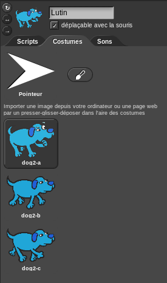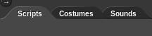
En haut a gauche tu as plein de catégorie d’action. Clique sur apparence.
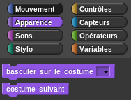
Dans la zone de script tu as déjà une base qui est faite pour toi.
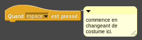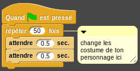
Prend le bloc “costume suivant” 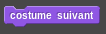 et colle le en dessous du premier bloc jaune pour avoir ceci
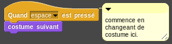
Maintenant essaye d’appuyer sur la barre d’espace. Et voila tu as fait un programme qui change le costume de ton personnage quand tu appuie sur la barre d’espace!
Maintenant on va changer les costumes vite pour donner l’impression que ton chien court. Pour ca prend le bloc “basculer sur le costume …”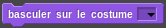
Ce bloc va te permettre de mettre le costume de ton choix sur ton personnage. Tu peux l’essayer en sélectionnant un costume. Par exemple prend le dog2-a. Clique dessus pour l’utiliser.
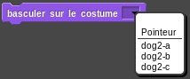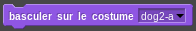
Pour faire courir ton chien il faut que tu changes entre dog2-b et dog2-c. Prend donc deux fois le bloc avec les bon costume et mets juste au dessous des blocs attendre, comme ceci:
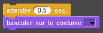
Maintenant appuies sur 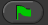 en haut a droite de l’écrant pour lancer ton programme de danse.
Bien joué pour toutes les missions précédentes. 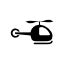
Attention pour cette mission tu seras un pilote d’hélicoptère. Tu devras suivre un chemin sans en sortir. Pour cela tu devras utiliser des blocks qui te permettent de savoir si tu touches une couleur ou pas.
Nous allons parler de blocks conditionnels. L’idée du block conditionnel est de faire quelque chose si la condition est respectée et autre chose si elle ne l’est pas. Par exemple si il reste du gateau alors j’en prends une part sinon je refais du gateau.
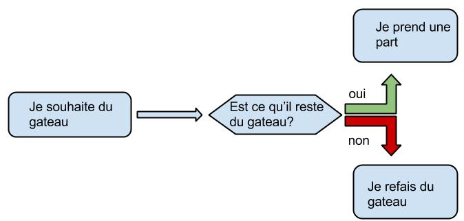
Le bloc conditionnel que nous allons utiliser est le “si” dans la catégorie “controles”
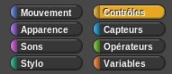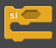
Par exemple on pourrait faire:
 se comprend si 3 est plus petit que 5 alors dire “Salut!”. La partie s’appelle la condition. Un bloc “si” est souvent mis avec un bloc “répeter indefiniment”
se comprend si 3 est plus petit que 5 alors dire “Salut!”. La partie s’appelle la condition. Un bloc “si” est souvent mis avec un bloc “répeter indefiniment”
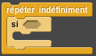 ceci permet de tester une condition indéfiniment.
Si tu souhaite savoir quand ton personnage touche un bord tu va devoir utiliser le bloc “couleur … touchée?” dans la section “capteurs”
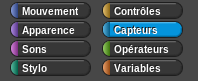
Tu peux cliqué sur la partie de couleur pour choisir la couleur que tu souhaite surveiller.
Par exemple si tu ne veux savoir si ton personnage touche un bord de couleur jaune et dire bonjour des qu’il touche le bord tu pourrais faire ca comme ca:
Pendre un bloc “répéter indéfiniment”:
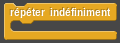
Mets un “si” dedans:
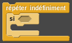
Ajoutes une condition pour si tu touche une couleur
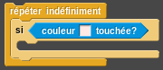
Dis quelle couleur tu souhaite suveiler en cliquant sur le cadre blanc puis sur la couleur que tu souhaite surveiler:

Et pour finir mets dedans ce que tu veux faire si ton personnage touche la couleur que tu as choisis:
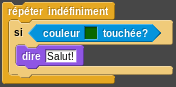
Réfléchi à comment tu peux faire en sorte de garde ton hélicoptère sur le circuit avec ça.
Bon assez parlé ! A toi de montrer tes talents de pilote en utilisant ce que je viens de t’expliquer.
N’oublies pas que tu peux toujours avoir de l’aide en cliquant droit sur un bloc et en cliquant sur aide.

Pour cette mission tu va prendre place dans un bolide et tenter de rejoindre la ligne d’arrivée dans ta voiture. Nous allons ici introduire deux blocs: le bloc “avancer” et le bloc “se diriger en faisant un angle de ...” que l’on va appeler “tourner”:
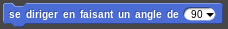
Comme tu pourras le voir dans le bloc “avancer” il y a un nombre qui défini de combien de pas tu souhaites avancer.
Pour le bloc “tourner” dans tu dois dire vers où tu souhaites tourner. Explore toute les possiblilitées!!
Donc le but est d’arriver au bout de la premiere ligne droite. Pour ca c’est à toi de jouer!!
Donc pour le moment tu as déjà dans la partie script ceci:
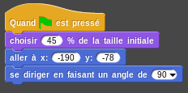
Rajoute un bloc “avancer” pour voir ce que cela fait. Essaye d’arriver au bout de la ligne droite.
Pour lancer ton programme appuie sur le petit drapeau vert en haut a droite de l’écran .
En mettant le bon nombre de pas dans le bloc “avancer” tu devrais arriver à ceci:
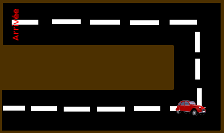
Maintenant ton programme doit ressembler a ceci:
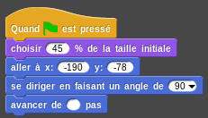
Il faut maintenant tourner vers le haut, pour cela prend un bloc tourner que l’on t’a montrer plus haut et sélectionne un angle pour aller vers le haut.
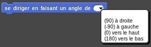
Ajoutes le en dessous du reste de ton programme et ta voiture tourne maintenant vers le haut quand elle arrive au bout de la ligne droite.
C’est pas encore tout a fait la fin, il faut encore avancer jusqu’au dessus puis tourner et encore avancer pour aller jusqu’à la ligne d’arrivée.
Essaye de refaire comme on a fait pour la premiere ligne droite. Vas y fonce!
N’oublies pas que tu peux toujours avoir de l’aide en faisant un clique droit sur un bloc et en cliquant sur aide.
Nous allons ici faire en sorte de faire parler nos personnage. Pour faire cela, il y a des blocs dans le menu “apparence” qui pourront t’aider.
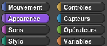
Regardes la différence entre dire et penser quelque chose.
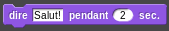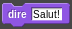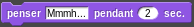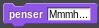
N’oublies pas que tu peux toujours avoir de l’aide en cliquant droit sur un bloc et en cliquant sur aide.
Maintenant fort de tout ce que tu viens d’apprendre. Essaye de faire un jeux chat et souris.
Le principe est simple, il y a deux joueur (un chat et une souris) la chat veux manger la souris et la souris ne veut pas être manger par le chat. Dés que le chat touche la souris la souris crie.
Pour je te donne quelque trucs:
- on commence avec le bloc:
qui permet de faire l’action qui se trouve en dessous de ce bloc quand la barre d’espace est pressée. Tu peux changer la touche en cliquant dessus.
- si tu souhaite rajouter un personnage clique sur 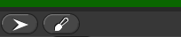
[a]tout en tu!!!
[b]mettre l'exemple apres